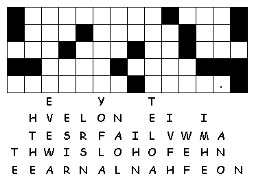
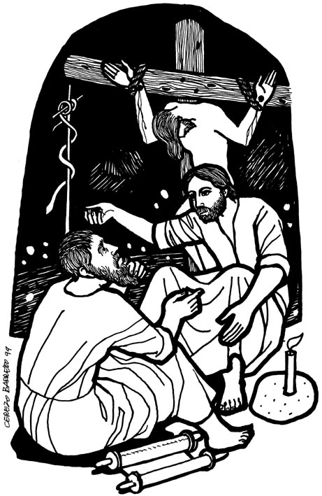

This
week's lessons: Numbers
21:4-9, Psalm
107:1-3, 17-22, Ephesians
2:1-10, John
3:14-21
Elementary School Pew-work
Listen hard to the Gospel. Afterward, unscramble the bold words in this story:
14And
the Son of Man must be tedlif (_________) up, just as that metal
snake was lifted up by sMose(________) in the desert. 15Then
everyone who has hfiat (________) in the Son of Man will have eternal
life. 16God loved the people of this world so much that he
geva (_______) his only Son, so that everyone who has faith in him
will have eternal life and never really die. 17God did not
send his Son into the dlowr(________) to condemn its people. He sent
him to save them! 18No one who has faith in God's Son will
be ddeennmoc(____________). But everyone who doesn't have faith in
him has already been condemned for not having faith in God's only
oSn(_______).
19The light has come into the world, and
people who do evil things are judged guilty because they love the
dark more than the ghilt(________). 20People who do evil
hate the light and won't come to the light, because it ylclare
(_______) shows what they have done. 21But everyone
ohw(______) lives by the truth will come to the light,
abceesu(__________) they want others to know that God is really the
one doing what they do.
|
 2. Did God send his Son into the world to condemn the world?____________________ 3. Why do people who do bad things hate the light?______________________________ 4. Where do goodness and truth come from?_________________________________ Questions taken from Sunday School Lessons; http://www.sundayschoollessons.com/ |
 |
|
Created by Puzzlemaker at DiscoverySchool.com |
|
Next week: Jeremiah 31:31-34 , Psalm 51:1-12 or Psalm119:9-16, Hebrews 5:5-10, John 12:20-33